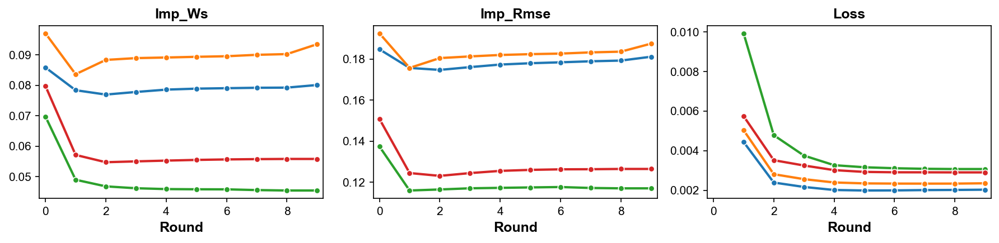
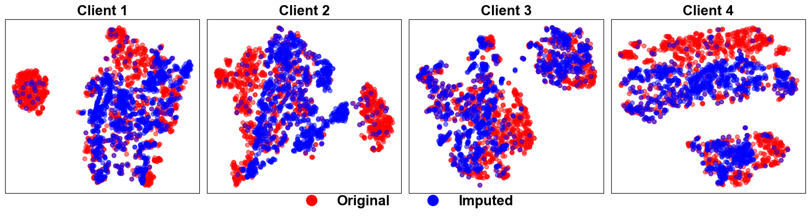

import numpy as np
import pandas as pd
import tabulate
import matplotlib.pyplot as plt
plt.rc('font', family='arial')
plt.rc('pdf', fonttype = 42)
plt.rc('ps', fonttype = 42)
Load Data
%load_ext autoreload
%autoreload 2
from fedimpute.data_prep import load_data, display_data
data, data_config = load_data("codrna")
display_data(data)
print("Data Dimensions: ", data.shape)
print("Data Config:\n", data_config)
+--------+--------+--------+--------+--------+--------+--------+--------+--------+
| X1 | X2 | X3 | X4 | X5 | X6 | X7 | X8 | y |
|--------+--------+--------+--------+--------+--------+--------+--------+--------|
| 0.7554 | 0.1364 | 0.0352 | 0.4132 | 0.6937 | 0.1591 | 0.3329 | 0.7154 | 1.0000 |
| 0.7334 | 0.7879 | 0.3819 | 0.3693 | 0.5619 | 0.4830 | 0.4351 | 0.5160 | 0.0000 |
| 0.7752 | 0.1364 | 0.1761 | 0.3290 | 0.7410 | 0.4259 | 0.4644 | 0.5268 | 1.0000 |
| 0.5905 | 0.7424 | 0.2720 | 0.2898 | 0.6920 | 0.3205 | 0.4019 | 0.6290 | 1.0000 |
| 0.7366 | 0.1212 | 0.2465 | 0.3290 | 0.7410 | 0.3249 | 0.5086 | 0.5631 | 1.0000 |
+--------+--------+--------+--------+--------+--------+--------+--------+--------+
Data Dimensions: (5000, 9)
Data Config:
{'target': 'y', 'task_type': 'classification', 'natural_partition': False}
Scenario Simulation
Basic Usage
%load_ext autoreload
%autoreload 2
from fedimpute.scenario import ScenarioBuilder
scenario_builder = ScenarioBuilder()
scenario_data = scenario_builder.create_simulated_scenario(
data, data_config, num_clients = 4, dp_strategy='iid-even', ms_scenario='mnar-heter'
)
print('Results Structure (Dict Keys):')
print(list(scenario_data.keys()))
scenario_builder.summarize_scenario()
The autoreload extension is already loaded. To reload it, use:
%reload_ext autoreload
Missing data simulation...
Results Structure (Dict Keys):
['clients_train_data', 'clients_test_data', 'clients_train_data_ms', 'clients_seeds', 'global_test_data', 'data_config', 'stats']
==================================================================
Scenario Summary
==================================================================
Total clients: 4
Global Test Data: (500, 9)
Missing Mechanism Category: MNAR (Self Masking Logit)
Clients Data Summary:
Train Test Miss MS Ratio MS Feature Seed
-- -------- ------- -------- ---------- ------------ ------
C1 (1125,9) (113,9) (1125,8) 0.47 8/8 6077
C2 (1125,9) (113,9) (1125,8) 0.51 8/8 577
C3 (1125,9) (113,9) (1125,8) 0.46 8/8 7231
C4 (1125,9) (113,9) (1125,8) 0.47 8/8 5504
==================================================================
Exploring Scenario
Data Heterogeneity
scenario_builder.visualize_data_heterogeneity(
client_ids=[0, 1, 2, 3],
distance_method='swd',
pca_col_threshold=20,
fontsize=18,
title=False,
save_path='./plots/data_heterogeneity.svg'
)

Missing Data Inspection
scenario_builder.visualize_missing_pattern(client_ids=[0, 1, 2, 3], save_path='./plots/ms_pattern.pdf')

scenario_builder.visualize_missing_distribution(
client_ids = [0, 1], feature_ids = [0, 1, 2, 3, 4],
stat = 'proportion', bins = 20, kde=True,
save_path='./plots/ms_distribution.pdf'
)

Running Federated Imputation
Basic Usage
%load_ext autoreload
%autoreload 2
from fedimpute.execution_environment import FedImputeEnv
env = FedImputeEnv(debug_mode=False)
env.configuration(imputer = 'mice', fed_strategy='fedmice')
env.setup_from_scenario_builder(scenario_builder = scenario_builder, verbose=1)
env.show_env_info()
env.run_fed_imputation(verbose=2)
The autoreload extension is already loaded. To reload it, use:
%reload_ext autoreload
[1mSetting up clients...[0m
[1mSetting up server...[0m
[1mSetting up workflow...[0m
[1mEnvironment setup complete.[0m
============================================================
Environment Information:
============================================================
Workflow: ICE (Imputation via Chain Equation)
Clients:
- Client 0: imputer: mice, fed-strategy: fedmice
- Client 1: imputer: mice, fed-strategy: fedmice
- Client 2: imputer: mice, fed-strategy: fedmice
- Client 3: imputer: mice, fed-strategy: fedmice
Server: fed-strategy: fedmice
============================================================
[32m[1mImputation Start ...[0m
[1mInitial: imp_rmse: 0.1664 imp_ws: 0.0831 [0m
[1mEpoch 8: loss: 0.0026[0m
[1mAll clients converged, iteration 8[0m
[1mFinal: imp_rmse: 0.1530 imp_ws: 0.0687 [0m
[32m[1mFinished. Running time: 10.4787 seconds[0m
Monitoring Imputation Progress
env.tracker.visualize_imputation_process()

Evaluation
Imputation Quality
%load_ext autoreload
%autoreload 2
from fedimpute.evaluation import Evaluator
X_trains = env.get_data(client_ids='all', data_type = 'train')
X_train_imps = env.get_data(client_ids='all', data_type = 'train_imp')
X_train_masks = env.get_data(client_ids='all', data_type = 'train_mask')
evaluator = Evaluator()
ret = evaluator.evaluate_imp_quality(
X_train_imps = X_train_imps,
X_train_origins = X_trains,
X_train_masks = X_train_masks,
metrics = ['rmse', 'nrmse', 'sliced-ws']
)
evaluator.show_imp_results()
The autoreload extension is already loaded. To reload it, use:
%reload_ext autoreload
================================================
Imputation Quality
================================================
rmse nrmse sliced-ws
---------- ---------- ---------- -----------
Client 1 0.181 0.505 0.080
Client 2 0.187 0.543 0.094
Client 3 0.117 0.325 0.045
Client 4 0.126 0.354 0.056
---------- ---------- ---------- ----------
Average 0.153 0.432 0.069
Std 0.032 0.094 0.019
================================================
X_trains = env.get_data(client_ids='all', data_type = 'train')
X_train_imps = env.get_data(client_ids='all', data_type = 'train_imp')
evaluator.tsne_visualization(
X_imps = X_train_imps,
X_origins = X_trains,
seed = 0
)
Evaluating TSNE for Client 1 ...
Evaluating TSNE for Client 2 ...
Evaluating TSNE for Client 3 ...
Evaluating TSNE for Client 4 ...

Local Prediction
X_train_imps, y_trains = env.get_data(client_ids='all', data_type = 'train_imp', include_y=True)
X_tests, y_tests = env.get_data(client_ids='all', data_type = 'test', include_y=True)
X_global_test, y_global_test = env.get_data(data_type = 'global_test', include_y = True)
data_config = env.get_data(data_type = 'config')
ret = evaluator.run_local_prediction(
X_train_imps = X_train_imps,
y_trains = y_trains,
X_tests = X_tests,
y_tests = y_tests,
data_config = data_config,
model = 'rf',
seed= 0
)
evaluator.show_local_prediction_results()
Clients: 0%| | 0/4 [00:00<?, ?it/s]
==========================================================
Downstream Prediction (Local)
==========================================================
accuracy f1 auc prc
---------- ---------- ---------- ---------- ----------
Client 1 0.894 0.842 0.975 0.946
Client 2 0.965 0.946 0.996 0.992
Client 3 0.956 0.932 0.982 0.975
Client 4 0.920 0.873 0.961 0.924
---------- ---------- ---------- ---------- ----------
Average 0.934 0.898 0.979 0.959
Std 0.028 0.042 0.013 0.026
==========================================================
ret = evaluator.run_local_prediction(
X_train_imps = X_train_imps,
y_trains = y_trains,
X_tests = X_tests,
y_tests = y_tests,
data_config = data_config,
model = 'lr',
seed= 0
)
evaluator.show_local_prediction_results()
Clients: 0%| | 0/4 [00:00<?, ?it/s]
==========================================================
Downstream Prediction (Local)
==========================================================
accuracy f1 auc prc
---------- ---------- ---------- ---------- ----------
Client 1 0.903 0.871 0.990 0.977
Client 2 0.903 0.845 0.962 0.935
Client 3 0.850 0.809 0.950 0.911
Client 4 0.823 0.778 0.973 0.968
---------- ---------- ---------- ---------- ----------
Average 0.869 0.826 0.968 0.948
Std 0.034 0.035 0.015 0.027
==========================================================
Federated Prediction
ret = evaluator.run_fed_prediction(
X_train_imps = X_train_imps,
y_trains = y_trains,
X_tests = X_tests,
y_tests = y_tests,
X_test_global = X_global_test,
y_test_global = y_global_test,
data_config = data_config,
model_name = 'rf',
seed= 0
)
evaluator.show_fed_prediction_results()
===============================================================
Downstream Prediction (Fed)
===============================================================
Personalized accuracy f1 auc prc
-------------- ---------- ---------- ---------- ----------
Client 1 0.956 0.932 0.988 0.962
Client 2 0.956 0.930 0.995 0.989
Client 3 0.956 0.932 0.995 0.989
Client 4 0.876 0.800 0.969 0.943
---------- ---------- ---------- ---------- ----------
Global 0.914 0.862 0.952 0.906
===============================================================
ret = evaluator.run_fed_prediction(
X_train_imps = X_train_imps,
y_trains = y_trains,
X_tests = X_tests,
y_tests = y_tests,
X_test_global = X_global_test,
y_test_global = y_global_test,
data_config = data_config,
model_name = 'lr',
seed= 0
)
evaluator.show_fed_prediction_results()
(900, 8) (900,)
3.52it/s]
===============================================================
Downstream Prediction (Fed)
===============================================================
Personalized accuracy f1 auc prc
-------------- ---------- ---------- ---------- ----------
Client 1 0.912 0.878 0.982 0.955
Client 2 0.920 0.892 0.996 0.992
Client 3 0.903 0.867 0.968 0.947
Client 4 0.876 0.833 0.972 0.960
---------- ---------- ---------- ---------- ----------
Global 0.912 0.878 0.979 0.953
===============================================================
All In One
%load_ext autoreload
%autoreload 2
from fedimpute.evaluation import Evaluator
evaluator = Evaluator()
ret = evaluator.evaluate_all(
env, metrics = ['imp_quality', 'pred_downstream_local', 'pred_downstream_fed']
)
evaluator.show_results_all()
[1mEvaluating imputation quality...[0m
[1mImputation quality evaluation completed.[0m
[1mEvaluating downstream prediction...[0m
Clients: 0%| | 0/4 [00:00<?, ?it/s]
[1mEarly stopping at epoch 593[0m
[1mEarly stopping at epoch 287[0m
[1mEarly stopping at epoch 583[0m
[1mEarly stopping at epoch 360[0m
[1mDownstream prediction evaluation completed.[0m
[1mEvaluating federated downstream prediction...[0m
Global Epoch: 0%| | 0/100 [00:00<?, ?it/s]
[1mEpoch 0 - average loss: 0.6716053117724026[0m
[1mEpoch 10 - average loss: 0.5709273157750859[0m
[1mEpoch 20 - average loss: 0.48411076998009406[0m
[1mEpoch 30 - average loss: 0.4436344894416192[0m
[1mEpoch 40 - average loss: 0.43356676005265293[0m
[1mEpoch 50 - average loss: 0.4266376635607551[0m
[1mEpoch 60 - average loss: 0.4221082873204175[0m
[1mEarly stopping at epoch 65[0m
[1mEpoch 70 - average loss: 0.40617619396424764[0m
[1mEarly stopping at epoch 71[0m
[1mEarly stopping at epoch 74[0m
[1mEpoch 80 - average loss: 0.3788260501973769[0m
[1mEarly stopping at epoch 81[0m
[1mEarly stopping at epoch 100[0m
[1mEarly stopping at epoch 121[0m
[1mEarly stopping at epoch 125[0m
[1mFederated downstream prediction evaluation completed.[0m
[1mEvaluation completed.[0m
| imp_quality | pred_downstream_local | pred_downstream_fed | |||||||||||||
|---|---|---|---|---|---|---|---|---|---|---|---|---|---|---|---|
| rmse | nrmse | sliced-ws | accuracy | f1 | auc | prc | personalized_accuracy | personalized_f1 | personalized_auc | personalized_prc | global_accuracy | global_f1 | global_auc | global_prc | |
| 0 | 0.172028 | 0.479522 | 0.075509 | 0.787611 | 0.636364 | 0.860953 | 0.741470 | 0.884956 | 0.831169 | 0.958037 | 0.900117 | 0.906 | 0.86217 | 0.968807 | 0.94098 |
| 1 | 0.184269 | 0.533933 | 0.090226 | 0.893805 | 0.823529 | 0.952703 | 0.934722 | 0.920354 | 0.883117 | 0.981508 | 0.956229 | 0.906 | 0.86217 | 0.968807 | 0.94098 |
| 2 | 0.119754 | 0.331969 | 0.047390 | 0.929204 | 0.894737 | 0.975818 | 0.969489 | 0.884956 | 0.835443 | 0.975462 | 0.951035 | 0.906 | 0.86217 | 0.968807 | 0.94098 |
| 3 | 0.128211 | 0.359113 | 0.057849 | 0.752212 | 0.481481 | 0.854196 | 0.760059 | 0.867257 | 0.819277 | 0.972617 | 0.961279 | 0.906 | 0.86217 | 0.968807 | 0.94098 |
Export Evaluation Results in Different Format
evaluator.export_results(format = 'dataframe')
| imp_quality | pred_downstream_local | pred_downstream_fed | |||||||||||||
|---|---|---|---|---|---|---|---|---|---|---|---|---|---|---|---|
| rmse | nrmse | sliced-ws | accuracy | f1 | auc | prc | personalized_accuracy | personalized_f1 | personalized_auc | personalized_prc | global_accuracy | global_f1 | global_auc | global_prc | |
| 0 | 0.172028 | 0.479522 | 0.075509 | 0.787611 | 0.636364 | 0.860953 | 0.741470 | 0.884956 | 0.831169 | 0.958037 | 0.900117 | 0.906 | 0.86217 | 0.968807 | 0.94098 |
| 1 | 0.184269 | 0.533933 | 0.090226 | 0.893805 | 0.823529 | 0.952703 | 0.934722 | 0.920354 | 0.883117 | 0.981508 | 0.956229 | 0.906 | 0.86217 | 0.968807 | 0.94098 |
| 2 | 0.119754 | 0.331969 | 0.047390 | 0.929204 | 0.894737 | 0.975818 | 0.969489 | 0.884956 | 0.835443 | 0.975462 | 0.951035 | 0.906 | 0.86217 | 0.968807 | 0.94098 |
| 3 | 0.128211 | 0.359113 | 0.057849 | 0.752212 | 0.481481 | 0.854196 | 0.760059 | 0.867257 | 0.819277 | 0.972617 | 0.961279 | 0.906 | 0.86217 | 0.968807 | 0.94098 |
ret = evaluator.export_results(format = 'dict-dataframe')
ret['imp_quality']
| rmse | nrmse | sliced-ws | |
|---|---|---|---|
| 0 | 0.172028 | 0.479522 | 0.075509 |
| 1 | 0.184269 | 0.533933 | 0.090226 |
| 2 | 0.119754 | 0.331969 | 0.047390 |
| 3 | 0.128211 | 0.359113 | 0.057849 |
ret = evaluator.export_results(format = 'dict-dataframe')
ret['pred_downstream_fed']
| personalized_accuracy | personalized_f1 | personalized_auc | personalized_prc | global_accuracy | global_f1 | global_auc | global_prc | |
|---|---|---|---|---|---|---|---|---|
| 0 | 0.884956 | 0.831169 | 0.958037 | 0.900117 | 0.906 | 0.86217 | 0.968807 | 0.94098 |
| 1 | 0.920354 | 0.883117 | 0.981508 | 0.956229 | 0.906 | 0.86217 | 0.968807 | 0.94098 |
| 2 | 0.884956 | 0.835443 | 0.975462 | 0.951035 | 0.906 | 0.86217 | 0.968807 | 0.94098 |
| 3 | 0.867257 | 0.819277 | 0.972617 | 0.961279 | 0.906 | 0.86217 | 0.968807 | 0.94098 |
regression analysis
X_trains, y_trains = env.get_data(client_ids='all', data_type = 'train', include_y=True)
data_config = env.get_data(data_type = 'config')
data_config['task_type'] = 'classification'
ret = evaluator.run_local_regression_analysis(
X_train_imps = X_train_imps,
y_trains = y_trains,
data_config = data_config
)
evaluator.show_local_regression_results(client_idx = 0)
Local Logit Regression Results (client 1)
==============================================================================
Dep. Variable: y No. Observations: 1125
Model: Logit Df Residuals: 1116
Method: MLE Df Model: 8
Date: Mon, 21 Apr 2025 Pseudo R-squ.: 0.2545
Time: 16:28:07 Log-Likelihood: -528.54
converged: True LL-Null: -708.95
Covariance Type: nonrobust LLR p-value: 4.432e-73
==============================================================================
coef std err z P>|z| [0.025 0.975]
------------------------------------------------------------------------------
const 47.6797 4.807 9.919 0.000 38.258 57.101
X1 -82.3736 7.642 -10.779 0.000 -97.351 -67.396
X2 -19.5991 2.591 -7.563 0.000 -24.678 -14.520
X3 10.0812 3.236 3.116 0.002 3.739 16.423
X4 8.6467 4.951 1.747 0.081 -1.056 18.350
X5 4.8074 6.234 0.771 0.441 -7.411 17.026
X6 15.6919 4.340 3.616 0.000 7.187 24.197
X7 11.8661 4.610 2.574 0.010 2.831 20.901
X8 5.4795 6.139 0.893 0.372 -6.553 17.512
==============================================================================
X_trains, y_trains = env.get_data(client_ids='all', data_type = 'train', include_y=True)
data_config = env.get_data(data_type = 'config')
data_config['task_type'] = 'classification'
evaluator.run_fed_regression_analysis(
X_train_imps = X_train_imps,
y_trains = y_trains,
data_config = data_config
)
evaluator.show_fed_regression_results()
Federated Logit Regression Result
==============================================================================
Dep. Variable: y No. Observations: 4500
Model: Logit Df Residuals: 4491
Method: MLE Df Model: 8
Date: Mon, 21 Apr 2025 Pseudo R-squ.: 0.2478
Time: 16:28:24 Log-Likelihood: -2133.1
converged: True LL-Null: -2835.8
Covariance Type: nonrobust LLR p-value: 4.035e-298
==============================================================================
coef std err z P>|z| [0.025 0.975]
------------------------------------------------------------------------------
const 30.4160 0.129 235.463 0.000 30.163 30.669
X1 -63.3583 0.231 -274.762 0.000 -63.810 -62.906
X2 -16.1744 0.064 -254.610 0.000 -16.299 -16.050
X3 15.2472 0.078 194.635 0.000 15.094 15.401
X4 11.3237 0.084 134.553 0.000 11.159 11.489
X5 10.7434 0.103 103.972 0.000 10.541 10.946
X6 10.6433 0.083 128.952 0.000 10.482 10.805
X7 8.6910 0.090 96.851 0.000 8.515 8.867
X8 1.0197 0.114 8.956 0.000 0.797 1.243
==============================================================================